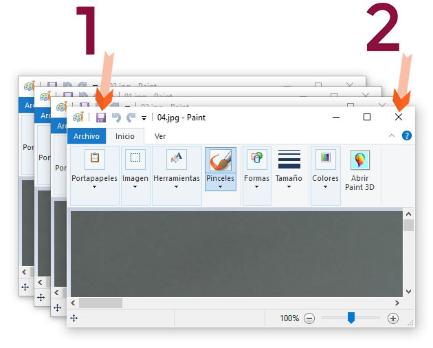

Reduzca el peso de sus imágenes en cuatro pasos súper fáciles.
Guía fácil de aprendizaje.


Seleccionamos todas nuestras imágenes a reducir, en nuestro caso las cuatro imágenes pesan 6,25 MB. Mientras cada imagen individual pesa 1,56 MB

Seleccione todas las imágenes y de clic en Editar

Se abrirá cada imagen en una ventana de Paint. De clic en el ícono Guardar y luego en Cerrar, realice esto en cada ventana.


Ahora podemos ver que todas nuestras imágenes pesan 2,92 MB. Y cada imagen pesa 748 KB. Hemos logrado más del 50% de reducción.
Aquí un video de 50 segundos con el mismo ejemplo:
Notas finales:
Prueba realizada en Sistema Operativo Windows 10
Puede reducir por lotes de imágenes seleccionando y reduciendo en cantidades de 15 imágenes.